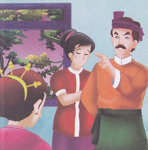
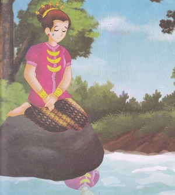
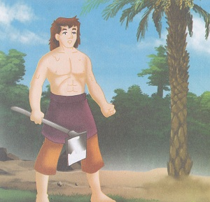

Legenda Pohon Enau
( Cerita Rakyat Nusa Tenggara Barat )
Dahulu kala, hiduplah seorang gadis cantik bernama Dedara Nunggal. Ayah dan ibunya sudah bercerai dan kini keduanya sudah menikah dengan orang lain. Saat ia menemui ibunya, ia diusir oleh ayah tirinya. Begitu pula saat ia menemui ayahnya diusir oleh ibu tirinya. Akhirnya, ia berjalan menyusuri sungai Jongkok, disana ia menemukan sebuah batu besar dan duduk termenung meratapi hidupnya. 
Karena sedih, ia pun terjun ke dalam sungai. Saat tubuhnya tenggelam, tiba-tiba ia berubah menjadi batang pohon. Pohon itu hanyut ke hilir. Di hilir, seorang pemuda yang sedang mandi terkejut karena ada batang pohon yang mengenai tubuhnya dan mengatakan sesuatu. “pemuda yang baik, jangan takut! Tolonglah aku, maka aku akan membalas budimu” ujar Dedara yang telah menjelma menjadi sebatang pohon. Pemuda tersebut membawanya ke tepi.
Pemuda tersebut bernama Teruna Nunggal, ia pun menanamkan pohon tersebut. “Bagaimana kau bisa berguna untuk orang lain?” tanya Teruna. “Nanti, setelah bungaku muncul panjatlah dan ayunkan bungaku, lalu pukullah batangku dengan pelepah kelapa sambil membaca mantra” ujar Dedara. Teruna mendengarkan penjelasan Dedara dengan seksama. “Setelah itu selipkan pemukul ke batangku, maka bungaku dapat mengalirkan air yang berguna untuk kalian” lanjutnya. “Air tersebut manis, dan dapat kalian jadikan minuman tapi ingat jangan melampaui batas karena air ini memebukkan” ujra Dedara. Sejak saat itu dedara menjelma menjadi batang pohon dimanfaatkan oleh manusia menjadi gula atau tuak. Pohon itu dikenal dengan pohon enau. 